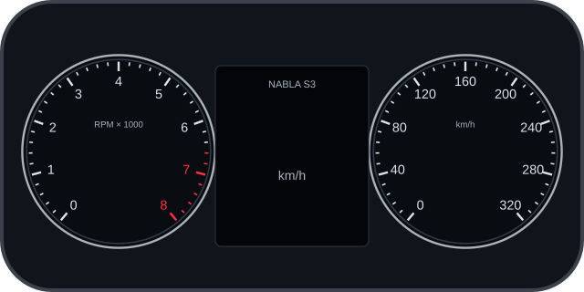
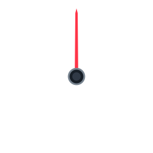

0D1Fondo: s3-cluster.svg. Agujas: red-needle.svg. El coche usa estas mismas imágenes y mueve las agujas en la GPU. Los dígitos usan una textura de caracteres, sin repintar el HTML.
La distribución del coche se edita en src/catalog/monitors/s3-cluster.ts. Esta
página sirve de vista previa. El
ejemplo de panel HTML sigue disponible.